Two classic models · classification AND regression
What it is · How it learns · Parameters · Metrics · Where it's used
Built on 5,000 real Indian engineering student records
Roadmap
Part 1 — Decision Tree 🌳
What is it?
How it learns
Depth & overfitting
Tree for regression
Parameters
Part 2 — SVM 🛣️
What is it?
Margin & support vectors
C, kernel, gamma
SVR for regression
Why scaling matters
Part 3 — Evaluation metrics · Part 4 — Head to head · Part 5 — Cheat sheet
🖱️ Slides with a green CLICK ME badge are interactive — press the buttons and watch the model change.
Our dataset
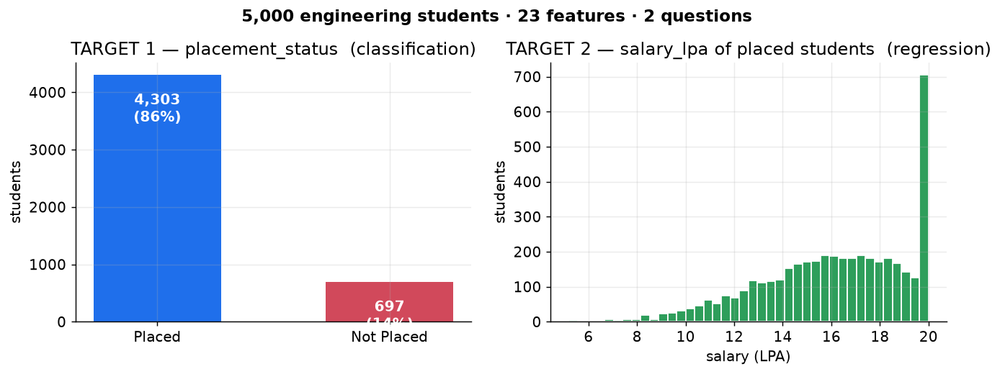
23 features CGPA, coding skill, internships, projects, backlogs, attendance, branch…
Notice: only 14% were NOT placed. Remember this — it breaks "accuracy" later.
The same data, two different questions
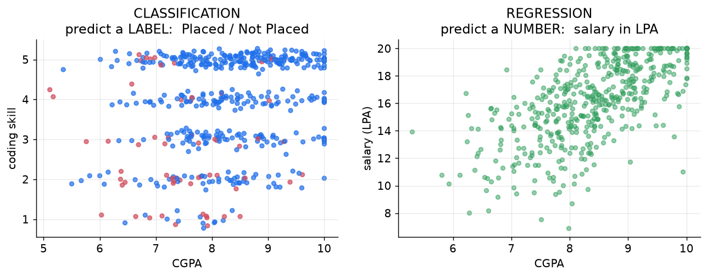
Classification
Regression
Question
Will this student get placed?
What salary will they get?
Answer type
a LABEL (Placed / Not Placed)
a NUMBER (14.9 LPA)
Model name
DecisionTreeClassifier · SVC
DecisionTreeRegressor · SVR
Good news: both Decision Trees and SVM do both jobs. Same idea, different last step.
Part 1
Decision Trees 🌳
What is a Decision Tree?
It plays "20 Questions" with your data.
A human placement officer would ask:
"Is the CGPA above 7.5?" → yes
"Any backlogs?" → no
"Coding skill 3 or more?" → yes → This student will get placed.
That's literally the model.
A tree is just a flowchart of yes/no questions that the computer
worked out by itself from the data.
No maths needed to read it — which is why people trust it.
A real tree, trained on our 5,000 students
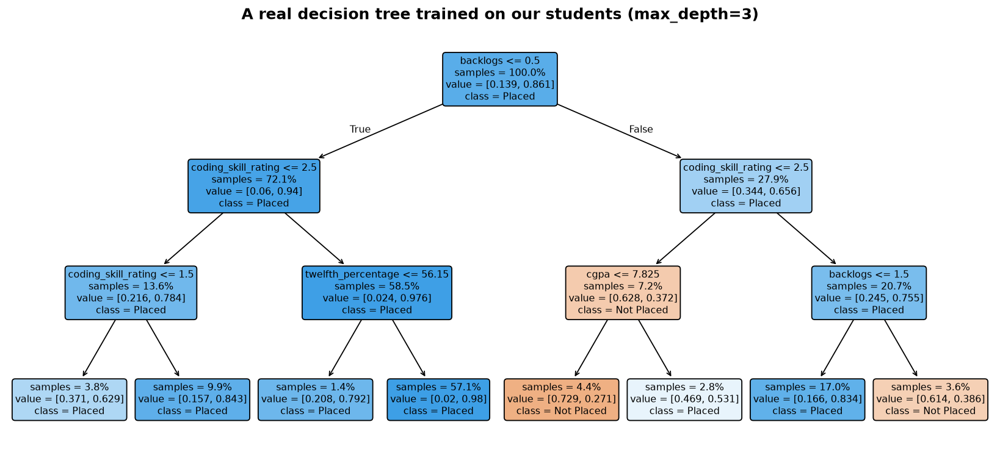
Read top → bottom. Each box asks one question. Blue = "Placed", orange = "Not Placed".
How does it learn? It tries every question.
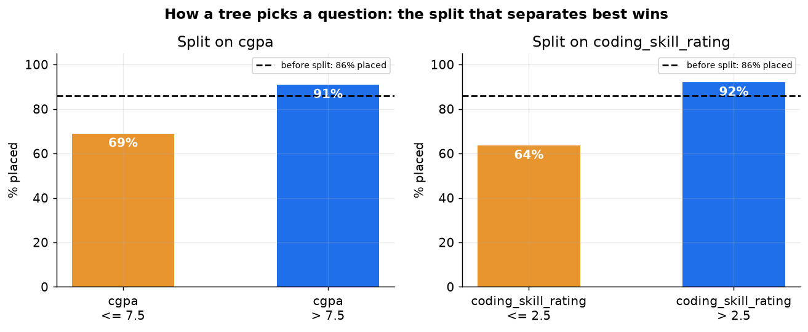
Before splitting: 86% placed — one big mixed group.
The tree tries every feature at every cut-off, and keeps the one that makes the two
resulting groups the purest (most one-sided).
Then it repeats the same trick inside each new group. That's it — that's training.
"Purity" in one picture
Impure 😕 🔵🔴🔵🔴🔵🔴 50/50 — the question told us nothing
Pure 😀 🔵🔵🔵🔵🔵🔴 almost all one class — great question!
Scikit-learn measures this with gini (default) or entropy.
You do not need the formula — just remember: lower impurity = better split,
and the two options almost always give the same tree.
A tree carves the space into BOXES
CLICK MEmax_depth:
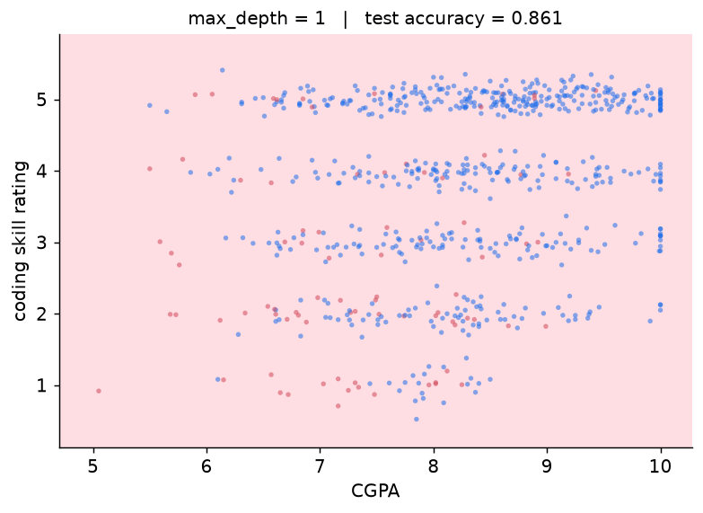
Every question = one straight cut. More depth → more boxes → the boundary starts
chasing individual students. Watch the test accuracy as you click up.
The #1 problem: overfitting
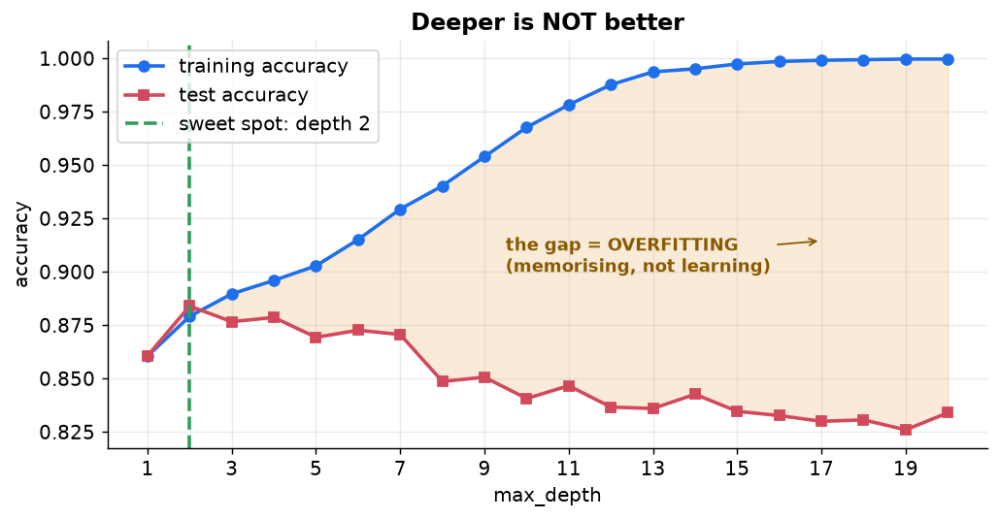
A fully grown tree scores 100% on data it has already seen and gets worse on new students.
It memorised names instead of learning rules.
The fix = pruning: cap max_depth, or demand a minimum number of
students per leaf. A smaller tree usually wins.
Same tree, now predicting a NUMBER
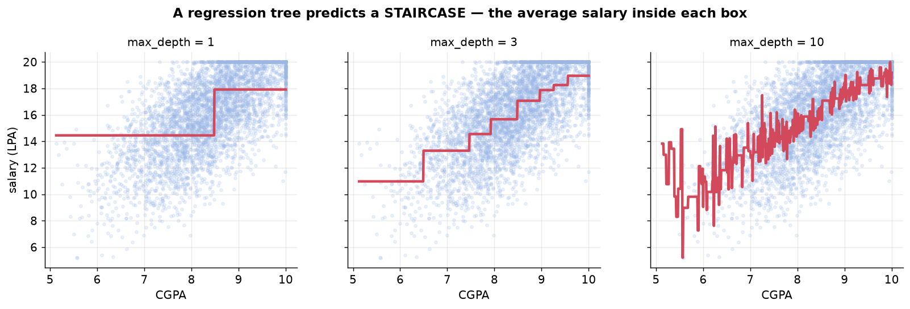
Classification tree: each leaf votes for a class → "Placed". Regression tree: each leaf reports the average salary of the students inside it → "16.4 LPA".
That's why the prediction is a staircase, never a smooth line —
and why a tree can never predict a salary higher than anything it saw in training.
Bonus: it tells you what mattered
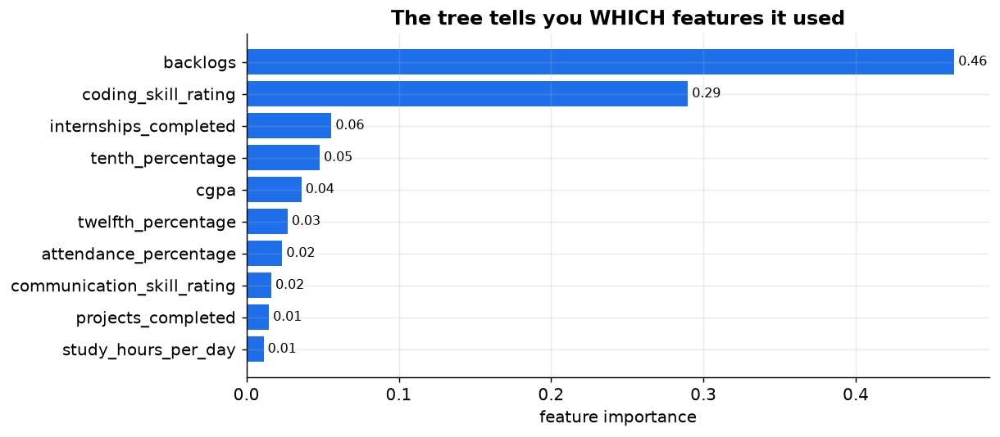
"CGPA and coding skill drive placement" — a sentence you can say to a principal
without saying the word algorithm. Very few models give you this for free.
Decision Tree — the parameters you'll actually touch
Parameter
What it does
Start with
max_depth
how many questions deep — the main dial
3 – 8
min_samples_leaf
a leaf must hold at least this many students
10 – 50
min_samples_split
don't split a group smaller than this
20
criterion
how purity is measured (gini/entropy)
default
class_weight
'balanced' — care more about the rare class
try it here!
Rule of thumb: every one of these does the same job — keep the tree small.
Decision Tree — the honest summary
✅ Strengths
You can read it — explainable
No feature scaling needed
Handles numbers + categories
Barely bothered by outliers
Fast to train
❌ Weaknesses
Overfits if you let it grow
Unstable — change a few rows, get a different tree
Only straight, axis-parallel cuts
Cannot extrapolate beyond training data
Used for: loan approval, medical triage, churn, fraud rules, credit scoring —
anywhere a human must be able to justify the decision.
The weakness has a famous fix
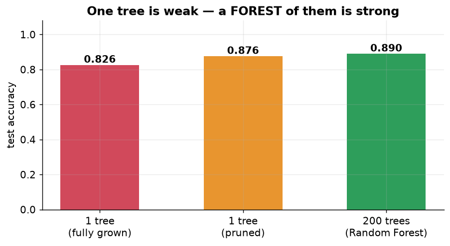
Train hundreds of slightly different trees and let them vote →
Random Forest / Gradient Boosting (XGBoost, LightGBM).
You lose the pretty picture, you gain accuracy. Trees are the building block of the
most-used models in industry.
Part 2
Support Vector Machines 🛣️
What is an SVM?
It draws the widest possible street between two groups.
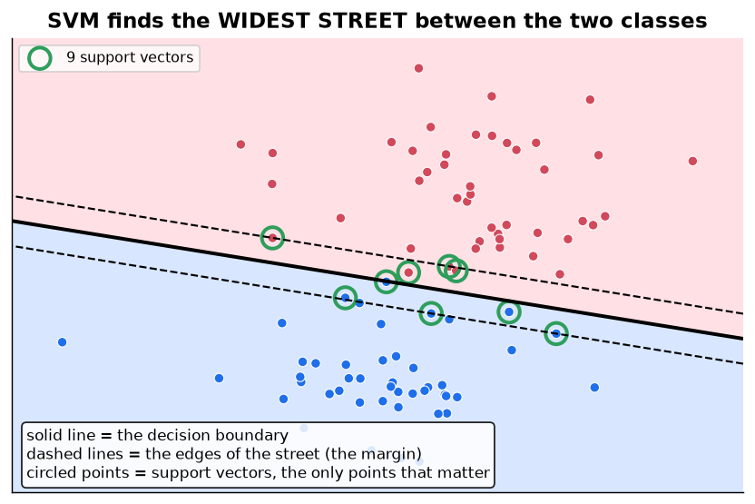
Toy example so the idea is visible — the real dataset comes back in Part 3.
How does it learn?
Many lines separate these points.
Which one is best?
SVM's answer: the one that stays as far away as possible from both groups —
the line with the widest empty street (the margin) around it.
Why wide is good:
a line squeezed against the data will misclassify the very next student who arrives.
A wide street leaves room for error.
Support vectors = the handful of points touching the edge of the street.
They alone define the boundary — delete every other point and you get the identical model.
That's where the name comes from.
C — how strict is the model?
CLICK MEC:
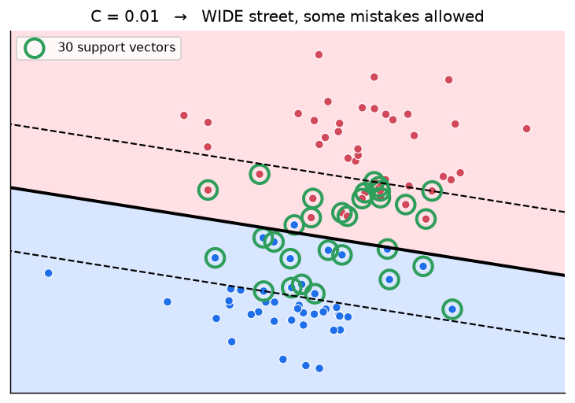
Low C = "I'll tolerate mistakes for a wider street" → simpler, may underfit
High C = "Get every point right!" → narrow street, may overfit
But what if a straight line can't do it?
Real data is rarely split by a straight line.
The kernel trick: SVM imagines the points lifted into a higher dimension
where they can be separated by a flat surface — then brings the answer back down,
where it looks like a curve.
The tabletop analogy 🎾
Red balls in the middle, blue balls around them. On a flat table no ruler separates them.
Now lift the red ones up — a flat sheet of paper slides right between them.
You never have to do this maths. You just type kernel='rbf'.
Kernels in action
CLICK MEkernel:
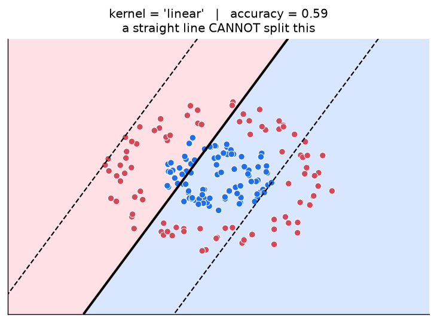
rbf is the default and the right first choice 90% of the time.
Use linear when you have very many features (e.g. text).
gamma — the reach of one point
CLICK MEgamma:
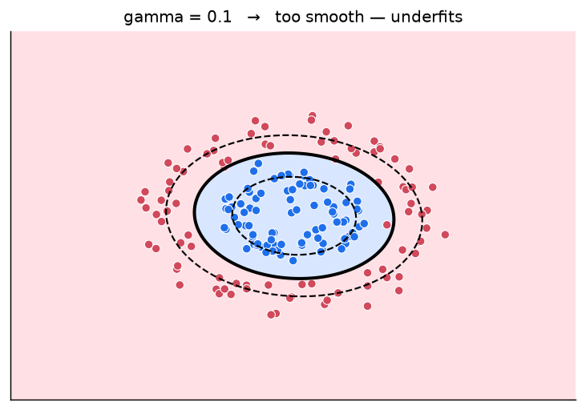
High gamma → the boundary grows little islands around individual points.
Classic overfitting. Low gamma → almost a straight line.
SVM for regression (SVR)
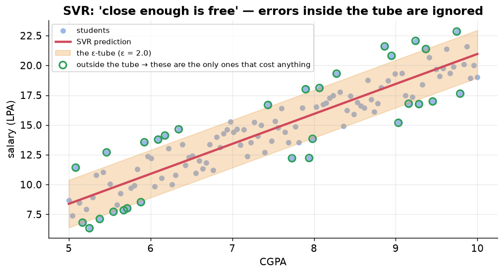
Classification asks for the widest street between the classes.
Regression flips it: find the flattest tube that contains as many points as possible.
epsilon (ε) = how wrong you're allowed to be for free.
Predictions inside the tube cost nothing — only the circled points influence the model.
⚠️ The mistake everyone makes once
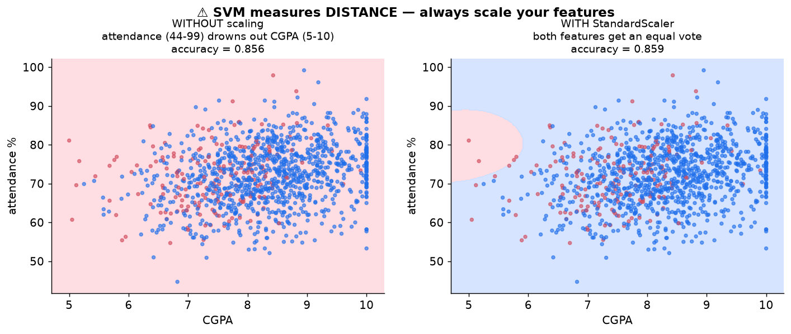
SVM measures distance. Attendance runs 44→99, CGPA runs 5→10.
Without scaling, attendance is ~10× "louder" and CGPA is ignored.
from sklearn.pipeline import make_pipeline
from sklearn.preprocessing import StandardScaler
model = make_pipeline(StandardScaler(), SVC(kernel="rbf")) # always do this
Decision Trees don't care about scaling at all. SVMs care enormously.
SVM — the parameters you'll actually touch
Parameter
What it does
Start with
C
mistake tolerance — the main dial
1, then try 0.1 / 10
kernel
shape of the boundary
'rbf'
gamma
reach of one point (rbf only)
'scale'
epsilon
width of the free zone (SVR only)
0.1 – 1
class_weight
'balanced' for imbalanced data
try it here!
C and gamma are a pair — tune them together with GridSearchCV.
SVM — the honest summary
✅ Strengths
Very strong on small/medium data
Handles curved boundaries (kernels)
Works when features > samples
The wide margin resists overfitting
❌ Weaknesses
Slow on big data (>100k rows)
A black box — can't explain it
Must scale features
No probabilities by default
Used for: text & spam classification, face/image recognition,
handwriting, gene expression & medical diagnosis — small, wide, clean datasets.
Part 3
How do we know it's any good?
First rule: never grade on the training data
Train set (70%) the model studies these students
Test set (30%) the exam — students it has never seen
Scoring on data the model already memorised is like giving students the answer key.
It's the most common beginner mistake.
⚠️ The accuracy trap
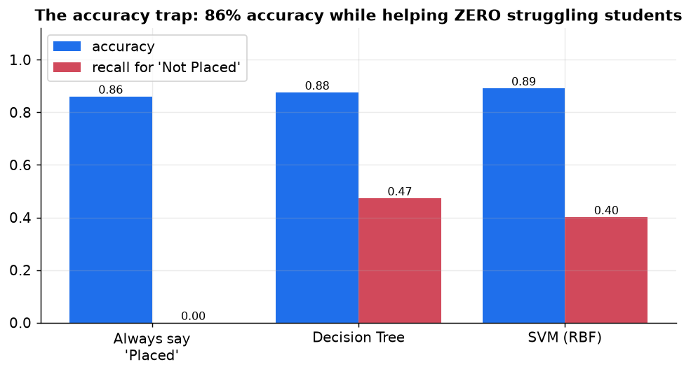
A model that says "Placed" to literally everybody scores 86% accuracy on our data —
and identifies zero of the students who actually need help.
Accuracy alone is meaningless when classes are imbalanced. You need the confusion matrix.
The confusion matrix
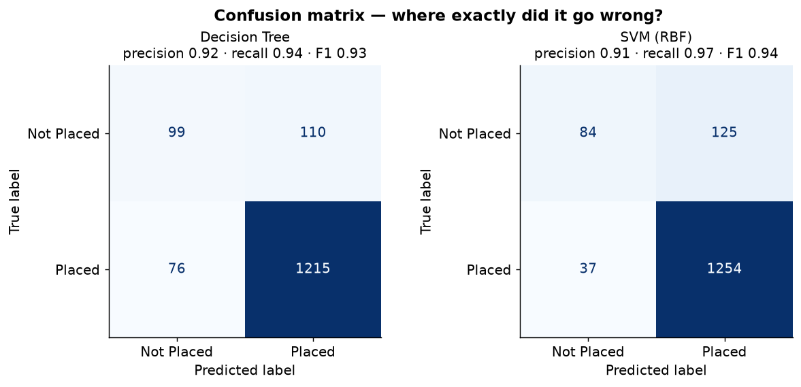
Metric
Plain English
Use when
Accuracy
how many did we get right overall?
classes are balanced
Precision
when we said "Placed", how often were we right?
false alarms are costly
Recall
of all students who got placed, how many did we find?
misses are costly
F1
the balance of precision and recall
imbalanced data — report this
ROC-AUC
ranking quality, 0.5 = coin flip, 1.0 = perfect
comparing models
ROC-AUC in one glance
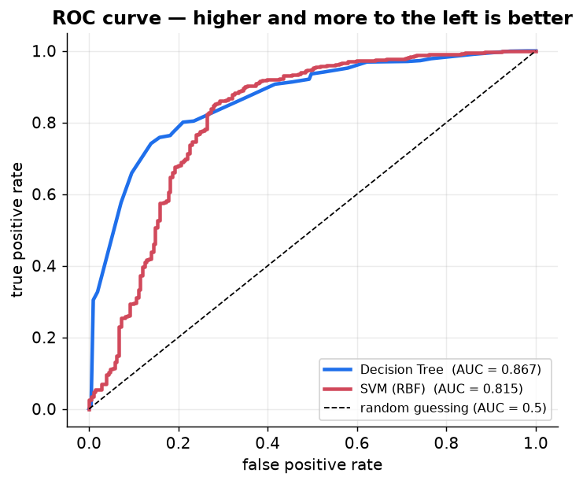
Every point on the curve is a different "how sure must I be before I say Placed?" threshold.
Bigger area underneath = better model, whatever threshold you finally pick.
Metrics for regression
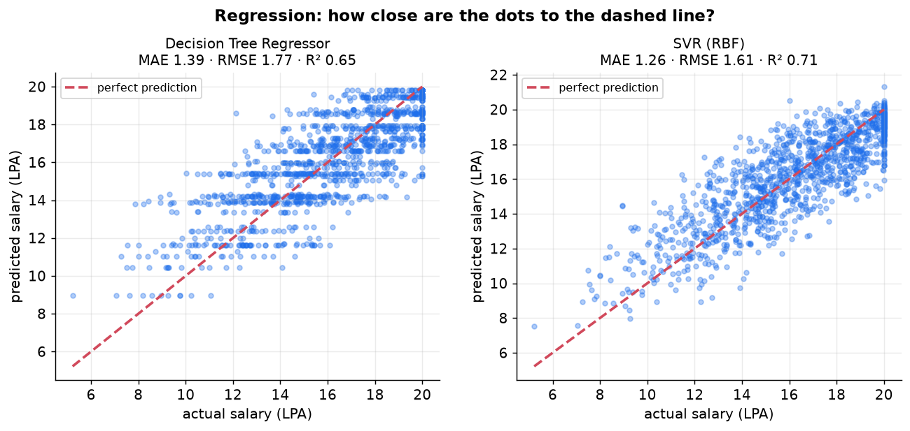
Metric
Plain English
Reading it
MAE
average miss, in LPA
"we're off by ~1.3 LPA" — easiest to explain
RMSE
like MAE but punishes big misses
use when a huge error is very bad
R²
fraction of the variation explained
1.0 perfect · 0 = no better than the mean
Rule: quote MAE to the business ("±1.3 lakh"), quote R² to the data team.
Part 4
Tree vs SVM — head to head
Results on OUR 5,000 students
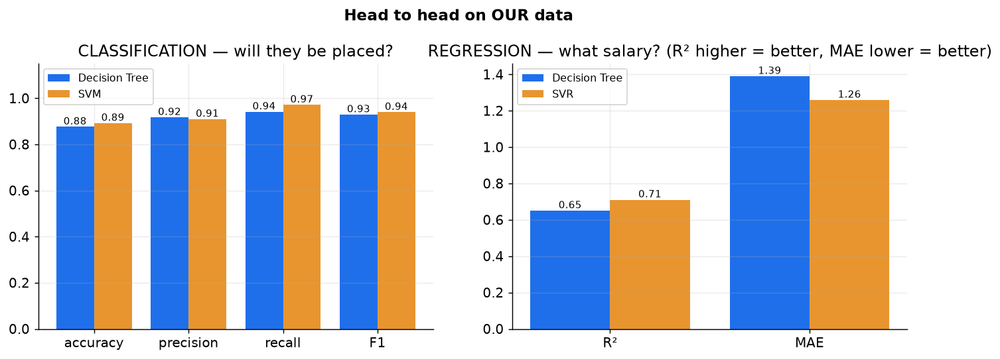
Classification
Tree: acc 0.88 · F1 0.93 SVM: acc 0.89 · F1 0.94
Regression (salary)
Tree: R² 0.65 · MAE 1.39 SVR: R² 0.71 · MAE 1.26
SVM wins slightly on both — but the Tree can explain why, and trains in a fraction of the time.
"Best" always depends on what you need.
Which one should I pick?
🌳 Decision Tree
🛣️ SVM
Core idea
a flowchart of yes/no questions
the widest street between classes
Boundary shape
boxes (straight cuts only)
straight or smoothly curved
Explainable?
Yes — you can draw it
No — black box
Needs scaling?
No
Yes, always
Big data (>100k)?
Fast ✅
Slow ❌
Main risk
overfitting
wrong C / gamma
Main dial
max_depth
C (+ gamma)
Need to justify the decision to a human → Tree.
Small, clean, messy-shaped data → SVM.
🧠 Quick check
A bank must tell rejected applicants why they were rejected. Which model?
✅ A tree is a readable flowchart — you can hand the applicant the exact rule.
In regulated industries explainability often beats a 1% accuracy gain.
🧠 Quick check
Your SVM gets 51% accuracy — barely better than a coin flip. Most likely cause?
✅ Unscaled features are the #1 cause of a broken SVM.
Wrap it in make_pipeline(StandardScaler(), SVC()) and try again.
The whole thing in 12 lines
from sklearn.model_selection import train_test_split
from sklearn.pipeline import make_pipeline
from sklearn.preprocessing import StandardScaler
from sklearn.tree import DecisionTreeClassifier, DecisionTreeRegressor
from sklearn.svm import SVC, SVR
X_train, X_test, y_train, y_test = train_test_split(X, y, test_size=.3, random_state=42)
tree = DecisionTreeClassifier(max_depth=5, min_samples_leaf=20).fit(X_train, y_train)
svm = make_pipeline(StandardScaler(), SVC(kernel="rbf", C=1)).fit(X_train, y_train)
print(tree.score(X_test, y_test), svm.score(X_test, y_test))
Swap Classifier→Regressor and SVC→SVR
and the exact same code predicts salary instead.